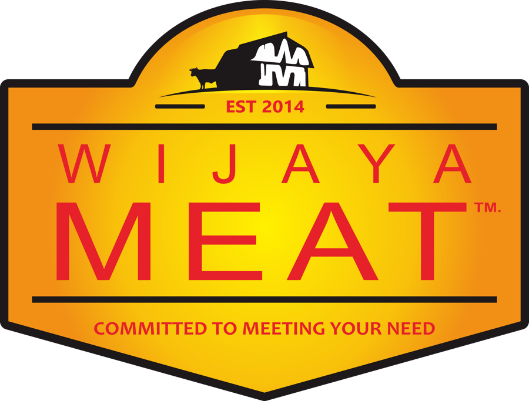
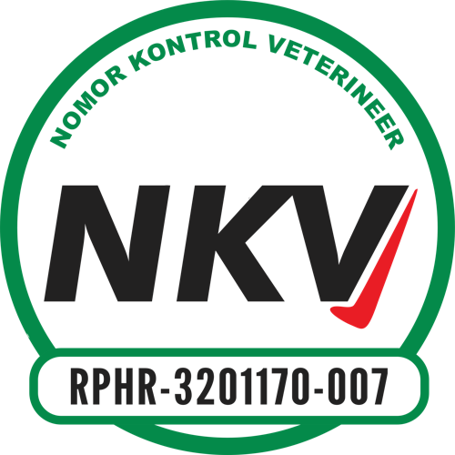
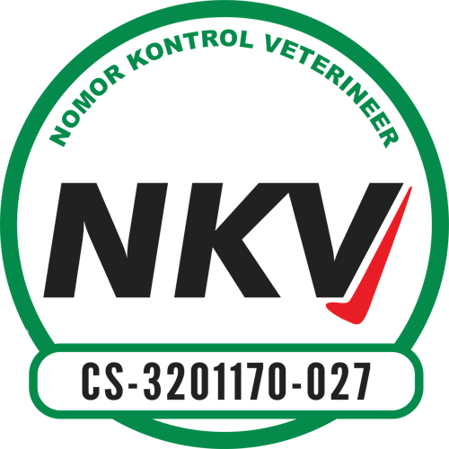
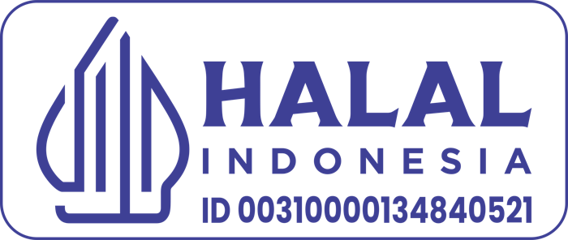

Salam Hormat,
Selamat datang di PT. Santi Wijaya Meat, tempat di mana komitmen kami untuk memenuhi kebutuhan Anda menjadi prioritas utama.
Sejak tahun 2014, ketika kami masih bernama CV. Wijaya Meat, perjalanan kami sebagai penyedia daging sapi berkualitas dimulai. Pada tahun 2020, kami melangkah lebih jauh dengan resmi menjadi PT. Santi Wijaya Meat, menghadirkan kualitas dan layanan yang lebih baik.
Kami bangga menyediakan daging sapi berkualitas tinggi untuk pasar modern, sektor perhotelan, dan restoran. Slogan kami, “Committed to Meeting Your Need,” mencerminkan tekad untuk selalu hadir dan memberikan solusi sesuai standar kualitas tertinggi.
Di halaman-halaman berikut, kami mengajak Anda mengenal perjalanan, nilai-nilai, dan komitmen kami sebagai mitra yang dapat Anda andalkan.
Terima kasih atas kepercayaan Anda.
Salam Hangat,
Berawal dari CV Wijaya Meat pada 2014, kami tumbuh menjadi perusahaan penyedia daging sapi dengan fasilitas RPH dan cold storage bersertifikat NKV Tingkat I dan jaminan halal.
| Nama | PT. Santi Wijaya Meat |
| Brand | Wijaya Meat |
| Kantor | Perum Asabri Blok B No. 20, RT 001/RW 005, Desa Sukasirna, Kec. Jonggol, Kab. Bogor, Jawa Barat 16830 |
| RPH & produksi | Jl. SMPN 01 Jonggol, Kp. Menan RT 04/RW 01, Desa Sukamaju, Kec. Jonggol, Kab. Bogor, Jawa Barat |
| Cold storage | Perum Asabri Blok B No. 20, Sukasirna |
| Telepon | +62 813-6006-959 |
| official@wijayameat.co.id | |
| Website | www.wijayameat.co.id |
| Akta pendirian | No. 16, 18 April 2020 |
| NIB | 0220008520949 |
| NPWP | 94.813.835.9-436.000 |
| Halal PT | ID00310000134840521 |
| Halal RPH | ID00110015321510124 |
| NKV RPH | RPHR-3201170-007 |
| NKV Gudang | CS-3201170-027 |
| Reg. produk hewan | PHD320104012400241 |
Menyediakan daging sapi segar berkualitas tinggi dan sehat untuk memenuhi kebutuhan pelanggan.
Memberikan layanan yang cepat, handal, dan profesional kepada pelanggan.
Menjalin kemitraan dengan peternak dan produsen untuk memastikan pasokan yang stabil dan berkualitas.
Memastikan keamanan dan kualitas daging melalui kontrol mutu dan keamanan pangan yang ketat.
Membangun tim yang solid, profesional, dan berdedikasi tinggi dalam melayani pelanggan.
Mengembangkan teknologi dan inovasi terbaru dalam manajemen distribusi untuk efisiensi dan produktivitas.
Sapi diterima dan diperiksa sesuai standar jaminan halal.
Sapi diistirahatkan agar tenang dan tidak stres sebelum dipotong.
Sapi dibersihkan sebelum masuk tahap berikutnya.
Oleh stockman dengan prinsip kesejahteraan hewan.
Sapi masuk jalur khusus menuju stunning box.
Dilakukan stunner bersertifikat secara aman.
Oleh juru sembelih halal (Juleha) bersertifikat.
5–10 menit untuk memastikan proses berjalan sempurna.
Karkas diangkat dengan pengait.
Dilakukan dengan presisi.
Pemeriksaan postmortem karkas dan jeroan.
Menggunakan splitting saw.
Penimbangan, tenderstretch, dan pelayuan karkas.
Pemisahan daging dari tulang dan pemeriksaan mutu.
Penimbangan dan penyimpanan sesuai suhu chill atau frozen.
Blast freezer, lalu dikirim dengan armada berpendingin.
Chuck 26% · Round 27% · Sirloin 9% · Rib 9,5% · Short Loin 8% · Short Plate 5,5% · Brisket 6% · Fore Shank 4% · Flank 4%.
Persentase indikatif, dapat bervariasi tiap ekor.
Good Warehousing Practices dan Good Hygiene Practices pada seluruh area gudang dan RPH.
Chill 0 s.d. -5°C dan frozen -17 s.d. -28°C. Suhu dicatat 3 kali sehari.
Pengawasan Otoritas Veteriner. Dokter hewan penanggung jawab teknis: drh. Soetrisno, MM.
Diuji di BPMSPH Kabupaten Bogor, laboratorium penguji terakreditasi KAN.
Diuji di SIG, laboratorium penguji terakreditasi KAN.
Setiap produk masuk disertai Certificate of Analysis (CoA) dan sertifikat veteriner dari unit asal.
| Parameter | Daging sapi Terbit 18 Agustus 2026 | Hati sapi (jeroan) Terbit 26 Mei 2026 |
| Salmonella spp. SNI ISO 6579-1:2017 | Negatif / 25 g | Negatif / 25 g |
| Staphylococcus aureus SNI ISO 6888-1:2012 | < 1×10² CFU/g | < 1×10² CFU/g |
| Escherichia coli MU 7.2.1.3-1 | < 1×10¹ CFU/g | < 1×10¹ CFU/g |
| Angka Lempeng Total (ALT) SNI 2897:2008 butir 4.1 | 1,8×10² CFU/g | 1,3×10² CFU/g |
| Residu antibiotik 4 golongan SNI 7424:2024 | Negatif | Negatif |
| Parameter | Pisau | Keranjang daging | Swab karyawan (4 sampel) |
| Escherichia coli SNI ISO 16649-2:2016 | Negatif | Negatif | Negatif |
| Staphylococcus aureus ISO 6888-1:2021/Amd 1:2023 | Negatif | Negatif | Negatif |
| Salmonella sp. ISO 6579-1:2017/Amd 1:2020 | Negatif | Negatif | Negatif |
| Angka Lempeng Total ISO 4833-1:2013/Amd 1:2022 | <10 | <10 | <10 (3) · 1,7×10² (1) |
Hasil hanya berlaku untuk sampel yang diuji. Laporan asli tersedia atas permintaan.
Setiap anggota tim telah melalui pelatihan dan memiliki sertifikasi sesuai bidangnya, untuk memastikan setiap langkah dilakukan dengan keahlian dan keterampilan profesional.
Menyediakan SDM serta sarana dan prasarana yang mendukung Proses Produk Halal (PPH).
Mematuhi peraturan perundang-undangan tentang Jaminan Produk Halal (JPH).
Menggunakan bahan halal dan melaksanakan PPH sesuai ketentuan yang berlaku.
Memastikan Kebijakan Halal ditetapkan, dipahami, dan diterapkan seluruh personel RPH.
Mensosialisasikan Kebijakan Halal kepada seluruh pihak terkait (stakeholder).
Melaksanakan Kebijakan Halal secara konsisten.
Limbah produksi dikelola dengan sistem terintegrasi dan ditangani setiap saat. Kami bekerja sama dengan Dinas Lingkungan Hidup setempat dalam prosedur perawatan dan pembuangan limbah sesuai regulasi yang berlaku.
Melayani segmen modern market, distributor, horeka, retail, industri.
Foto kegiatan pelatihan, audit NKV, dan penghargaan menyusul. Letakkan di assets/img/ lalu ganti pada halaman ini.
Penerima penghargaan Pelopor, Penggerak Peternakan Terbaik.
Salah satu dari 5 RPH dengan Sistem Jaminan Halal terbaik dan tercepat.
Gudang dan RPH berpredikat Baik Sekali pada surveilans 24 September 2025.
Juleha, stunner, Animal Welfare Officer, dan penyelia halal bersertifikat.
Tahun dan penyelenggara tiap penghargaan akan dicantumkan setelah dikonfirmasi.
Sertifikat Halal, Izin Usaha, Registrasi Produk Hewan, dan Sertifikat Merek akan ditambahkan sebagai scan setelah file diterima.
Potongan premium dari bagian tertentu sapi: empuk, juicy, dan kaya rasa. Umumnya dijadikan steak.
Potongan istimewa bertulang untuk sajian restoran dan acara spesial.
Potongan serbaguna dan ekonomis, cocok untuk masakan Nusantara dan slow cooking.
Bahu, perut, dan dada sapi dengan rasa daging kuat: empuk bila dimasak perlahan.
Potongan bertulang untuk kaldu dan sup, serta daging giling untuk olahan.
Katalog lengkap (Konro, Neckbone, Backbone, Shank, Intercostal, dan lainnya) tersedia melalui QR di halaman kontak.
Tim kami siap membantu kebutuhan daging sapi Anda: dari permintaan khusus (product by request) hingga pengiriman berpendingin.
Katalog produk lengkap
bit.ly/swmcatalogue
Unduh company profile
bit.ly/swmcompro